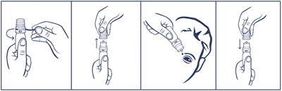

|
 |
| ДОРЗИАЛ (DORZIAL) dorzolamide капли глазные | ||||||||
|
Клинико-фармакологическая группа: Противоглаукомный препарат - местный ингибитор карбоангидразы Номер и дата регистрации: ЛП-006936 от 13.04.21 Код ATX: S01EC03 |
Владелец регистрационного удостоверения: зарегистрировано Представительство: | |||||||
Форма выпуска, состав и упаковка Капли глазные в виде прозрачной, бесцветной или почти бесцветной, слегка вязкой жидкости.
Вспомогательные вещества: натрия цитрата дигидрат - 2.94 мг, натрия гиалуронат - 1.8 мг, маннитол - 23 мг, 1М раствор натрия гидроксида - до рН 5.6, вода д/и - до 1 мл. 5 мл - флаконы пластмассовые (1) в комплекте с капельным дозатором - пачки картонные. | ||||||||
| ||||||||
Описание препарата основано на официально утвержденной инструкции по применению и утверждено компанией-производителем для издания 2023 г. | ||||||||
Фармакологическое действие |
Фармакокинетика |
Показания |
Режим дозирования |
Побочное действие |
Противопоказания |
Беременность и лактация |
Особые указания |
Передозировка |
Лекарственное взаимодействие |
Условия хранения и сроки годности |
Условия реализации
Фармакологическое действие
Дорзоламида гидрохлорид - ингибитор карбоангидразы II. Ингибирование карбоангидразы (КА) в цилиарном теле глазного яблока снижает продукцию внутриглазной жидкости, предположительно, благодаря замедлению синтеза ионов бикарбоната с их последующим восстановлением до натрия и выведением жидкости. В результате этого происходит снижение внутриглазного давления. Фармакокинетика
Распределение и метаболизм При длительном применении избирательно накапливается в эритроцитах в результате селективного связывания с карбоангидразой II (КА-ll), при этом концентрация свободного дорзоламида в плазме остается чрезвычайно низкой. Дорзоламид образует единственный метаболит - N-дезэтил-дорзоламид, подавляющий в меньшей степени, чем дорзоламид, фермент КА-ll, а также фермент KA-I. Метаболит накапливается в эритроцитах, связываясь, в основном, с KA-I. Дорзоламид в умеренной степени связывается с белками плазмы (около 33%). Выведение Дорзоламид и его метаболит выводятся преимущественно в неизменном виде через почки. После окончания лечения дорзоламид вымывается из эритроцитов неравномерно, т.е. очень интенсивно в начале, что приводит к быстрому и значительному снижению концентрации, с последующей фазой медленного вымывания с Т1/2 около 4 месяцев. Показания
Взрослым пациентам
Детям
Режим дозирования
При применении препарата Дорзиал обычная доза составляет по 1 капле в пораженный глаз (или в оба глаза) утром, днем и вечером. При замене какого-либо противоглаукомного препарата на Дорзиал следует начать лечение препаратом Дорзиал со следующего дня после отмены предыдущего препарата. При одновременном применении препарата Дорзиал с другими глазными каплями, их следует закапывать с интервалом не менее 10 мин. Порядок работы с флаконом, укомплектованным капельным дозатором  1. Удалить предохранительное кольцо перед первым использованием флакона. 2. Осторожно снять колпачок с флакона. Не касаясь дозатора, перевернуть флакон дозатором вниз, зафиксировав между большим и указательным пальцами. Перед началом использования рекомендуется прокачать дозатор до появления первой капли препарата путем нескольких нажатий указательным пальцем сверху на флакон. Не допускается механическое повреждение флакона. 3. Запрокинуть голову назад, расположить дозатор флакона над глазом и указательным пальцем одной руки оттянуть нижнее веко вниз. Слегка надавить на флакон и закапать необходимое количество раствора в конъюнктивальный мешок глаза. Избегать контактов наконечника открытого флакона с поверхностью глаза и руками. 4. После использования надеть колпачок на флакон. После вскрытия флакона препарат можно использовать в течение всего срока годности. По истечении этого срока препарат следует уничтожить. При видимых повреждениях флакона применять препарат Дорзиал не следует. Побочное действие
В клинических испытаниях препарат с дорзоламидом в форме глазных капель назначался 1108 пациентам в качестве монотерапии или дополнительной терапии к лечению бета-адреноблокаторами. Приблизительно у 3% пациентов препарат был отменен в связи с местными побочными реакциями со стороны глаза, наиболее частыми из них были конъюнктивиты и реакции со стороны век. Побочные эффекты, зарегистрированные в ходе исследований и в ходе пострегистрационного периода, классифицированы по частоте: очень часто (≥1/10); часто (≥1/100, <1/10); нечасто (≥1/1000, <1/100); редко (≥1/10000, <1/1000). Со стороны нервной системы: часто - головная боль; редко - головокружение, парестезии. Со стороны органа зрения: очень часто - жжение и боль; часто - поверхностный точечный кератит, слезотечение, конъюнктивит, воспаление век, зуд, раздражение века, затуманивание зрения; нечасто - иридоциклит; редко - покраснение глаз, боль, гиперкератоз век, транзиторная миопия (исчезающая после отмены препарата), отек роговицы, гипотония глаз, отслойка хориоидальной оболочки глаза после хирургических вмешательств по восстановлению оттока внутриглазной жидкости. Со стороны дыхательной системы: редко - носовые кровотечения. Со стороны пищеварительной системы: часто - тошнота, горький привкус во рту; редко - фарингит, сухость во рту. Со стороны мочевыделительной системы: редко - уролитиаз. Со стороны кожи и подкожной клетчатки: редко - контактный дерматит, синдром Стивенса-Джонсона, токсический эпидермальный некролиз. Общие расстройства и нарушения в месте введения: часто - астения, усталость; редко - аллергические реакции - признаки и симптомы местных реакций (со стороны век) и системные аллергические реакции, включающие ангионевротический отек, крапивницу, зуд, сыпь, затруднение дыхания, реже - бронхоспазм. Дети В ходе 3-месячного двойного слепого мультицентрового исследования с применением активного препарата сравнения, проводимого с участием 184 детей в возрасте младше 6 лет, профиль побочных реакций препарата с дорзоламидом в форме глазных капель был сопоставим с профилем побочных реакций у взрослых пациентов. Наиболее частыми побочными реакциями, связанными с применением препарата с дорзоламидом в форме глазных капель, у детей в возрасте младше 2 лет были конъюнктивальная инъекция (5.4%) и выделения из глаз (3.6%). У детей от 2 до 6 лет наиболее частыми побочными реакциями были чувство жжения в глазу (12.1%), конъюнктивальная инъекция (7.6%), боль в глазу (3%), воспаление век (3%). Противопоказания
С осторожностью Препарат не изучался у пациентов с тяжелой степенью печеночной недостаточности и, следовательно, должен применяться у этой категории пациентов с осторожностью. Применение при беременности и кормлении грудью
Противопоказано применение препарата при беременности и в период грудного вскармливания. Особые указания
В пожилом возрасте может повышаться чувствительность к дорзоламиду (требуется снижение дозы). Отсутствуют данные изучения применения препарата пациентами с острым приступом закрытоугольной глаукомы. Необходимо рассмотреть целесообразность отмены препарата в случае развития аллергических реакций. При неправильном применении офтальмологические препараты могут быть контаминированы бактериями-возбудителями глазных заболеваний, что может привести к серьезному повреждению глаза и последующей потере зрения. Влияние на способность к управлению транспортными средствами и механизмами При применении препарата не рекомендуется управлять транспортными средствами и заниматься потенциально опасными видами деятельности, требующими повышенной концентрации внимания и быстроты психомоторных реакций. Передозировка
Симптомы: возможны электролитные нарушения, развитие метаболического ацидоза и возникновение сонливости, тошноты, головокружения, головной боли, слабости, необычных сновидений, дисфагии. Лечение: проводится симптоматическая терапия, направленная на поддержание жизненно важных функций организма. Следует контролировать плазменные концентрации электролитов (особенно калия) и значения pH крови. Лекарственное взаимодействие
Специальных исследований по изучению взаимодействия препарата Дорзиал с другими лекарственными препаратами не проводилось. В клинических исследованиях препарат с дорзоламидом в форме глазных капель назначали в комбинации с другими лекарственными препаратами без отрицательных проявлений межлекарственного взаимодействия, в т.ч. с глазными каплями тимолола и бетаксолола, а также системными препаратами - ингибиторами АПФ, блокаторами кальциевых каналов, диуретиками, НПВП (включая ацетилсалициловую кислоту), гормонами (эстрогеном, инсулином, тироксином). Не исключается возможность взаимного усиления системных эффектов ингибиторов карбоангидразы для внутреннего применения и препарата Дорзиал при их одновременном использовании. Комбинированное лечение с препаратами, оказывающими системное действие, и местными ингибиторами карбоангидразы в клинических исследованиях не изучалось. Препарат Дорзиал является ингибитором карбоангидразы, и, хотя применяется местно, частично всасывается и может оказывать системное действие. В клинических исследованиях применение препаратов с дорзоламидом в форме глазных капель не сопровождалось нарушением кислотно-щелочного баланса. Однако подобные явления наблюдали при применении ингибиторов карбоангидразы, в т.ч. и в результате межлекарственного взаимодействия с другими препаратами (как проявление токсичности на фоне приема высоких доз салицилатов). Таким образом, при назначении препарата Дорзиал не следует забывать о возможности подобного межлекарственного взаимодействия. Пациент должен сообщить врачу обо всех лекарственных препаратах, которые он применяет или планирует применять, включая те, которые продаются без рецепта. Следует обратить особое внимание на прием высоких доз ацетилсалициловой кислоты, т.к. возможно усиление токсичности. |
||||||||
Вернуться наверх |
||||||||
Copyright © Справочник Видаль «Лекарственные препараты в России», Москва, Россия